Фасад пиццерии является «витриной» бренда в городском пространстве. С помощью фасада происходит первое знакомство потенциальных клиентов с брендом, поэтому он должен быть заметным и привлекательным, вписываться в городскую среду, дополняя и улучшая ее. Все решения по оформлению фасадов должны согласовываться в соответствии с местными нормами.
По степени заметности и уровню представления бренда в городской среде элементы фасада выстраиваются по иерархии: от крышных конструкций, как самых заметных и дорогих, до стикеров на окнах или световых конструкций внутри помещений, заметных непосредственно у окон пиццерии.
Крышные конструкции
Опциональный элемент.
Cамым заметный, но дорогостоящий элемент оформления фасадов. Скорее рекламирует бренд в целом, чем отдельную пиццерию.
Обязательный, если фасад и витрины пиццерии недостаточно заметны.
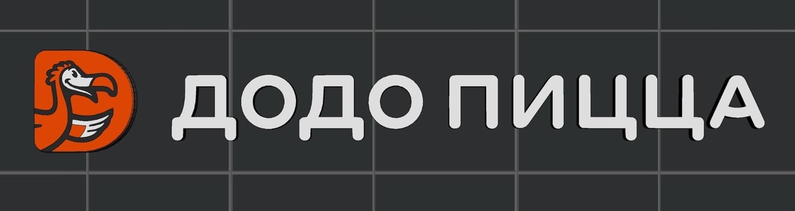
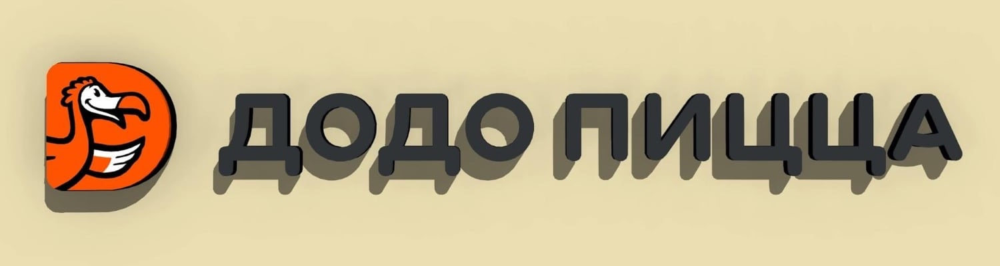
Вывеска
Обязательный элемент оформления.
Состоит из логотипа (фирменного знака и надписи) в виде световых элементов. Фирменный знак можно дублировать и использовать отдельно, в зависимости от типа фасада.
Технологии. Фирменный знак — вакуумное формование в корпусе черного цвета (RAL 9005), надпись — объемные буквы с обратной подсветкой лицевой поверхности белого цвета и непрозрачным бортом черного цвета.
На светлом фоне буквы изготавливают с черной непрозрачной лицевой поверхностью и контражурной подсветкой. Или полупрозрачной с обратной подсветкой с черной перфорированной пленкой.
Где размещать. Над окнами пиццерии на фризе (при наличии) или прямо на поверхности стены, с подложкой или без.
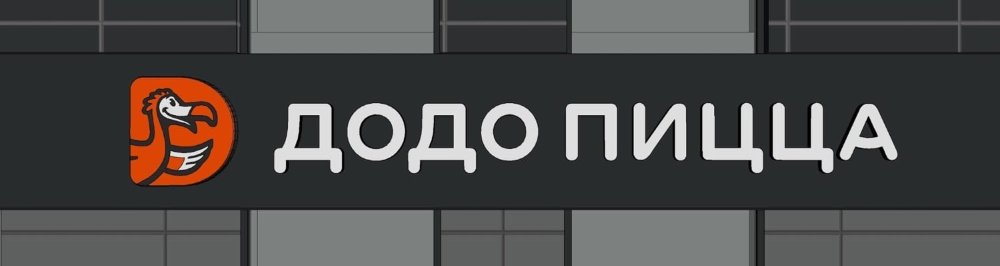
Фриз (подложка)
Если здание, в котором размещается пиццерия, имеет архитектурный “фриз” в виде горизонтального объемного элемента над окнами пиццерии, вывеску размещаем непосредственно на нем с выравниванием по центру. Фриз отделывается алюминиевыми композитными листами цвета RAL 7021 и дополнительно может оформляться планкеном из натуральной лиственницы или имитацией из ламинированной жести с текстурой древесины.
С панорамным остеклением используется дополнительный фриз из планкена из натуральной лиственницы с внутренней стороны остекления. Основной фриз в этом случае может быть только темно-серого RAL 7021 цвета.
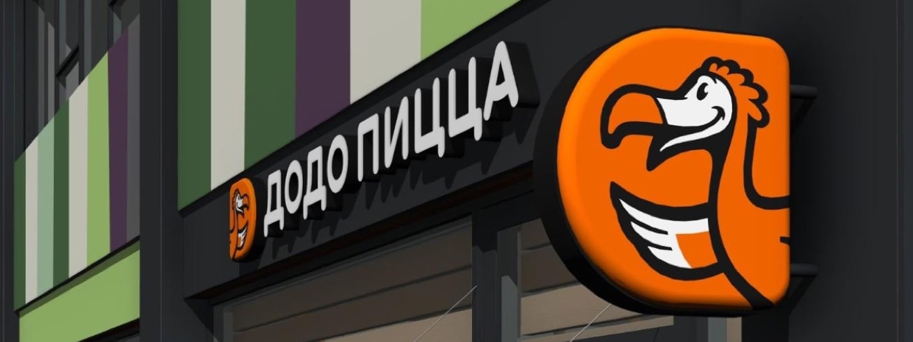
Панель-кронштейн (консольная вывеска)
Применяется как дополнительный элемент для выделения пиццерии на протяженных фасадах или вдоль линии застройки. В некоторых случаях может использоваться вместо знака на вывеске, при этом он должен располагаться на одной оси с фирменной надписью.
Световые надписи
Световые надписи «пиццерия» и «доставка» являются дополнительными элементами оформления фасадов и размещаются при достаточной длине основного фриза рядом с вывеской на одной горизонтальной оси.
Световая надпись «dodopizza.ru» может применяться при значительной длине фасадов либо на дополнительном фризе.
Интерьеры
Городской формат
Характерен для пиццерий размещенных в крупных и средних городах в локациях с высоким трафиком а также в рядовой «нарезке» крупных торговых центров, кроме фуд-кортов, для которых применяется отдельный формат «Додо Пицца Экспресс»
Как правило, размещается в помещениях небольшой площади, доступных непосредственно с пешеходного уровня.
Формат предполагает большую оборачиваемость, меньшее среднее время посещения, меньшую численность групп посетителей и большее количество посетителей-одиночек. Эти особенности учитываются в зонировании и элементах дизайна и меблировки.
Семейный формат
Предполагается для использования в пиццериях в жилой застройке крупных городов. Пиццерии в этом формате включают детские игровые комнаты (в большинстве случаев) и по площади крупнее пиццерий городского формата. При достаточной площади могут включать комнаты для игры в настольный футбол и зоны посадки для молодежи.
Пиццерии в семейном формате могут размещаться в стандартной нарезке в крупных районных торговых центрах.
Комбинированный формат (семейный с увеличенной зоной для одного)
Комбинированный вариант «Семейной» пиццерии с увеличенным количеством мест для посетителей-одиночек, при размещении в локациях с высоким трафиком в жилой застройке (например, у периферийных станций метро).
Концепции дизайна
Для отделки и оформления пиццерий «Додо» специально разработаны концепции дизайна с особой атмосферой, соответствующей имиджу бренда. Они рассчитаны для применения в различных форматах и типах помещений с учетом доступного бюджета: для базовой сметы применяются концепции группы New Level, для бюджетной — концепция “Октябрьский”.
City
Концепция NLC предназначена для пиццерий в «Городском» формате
Стиль пиццерии соответствует современным тенденциям, использует простые натуральные материалы, цветовую схему и решения. Концепция следует современным тенденциям в отделке и оформлении общественных помещений и создает светлое просторное пространство для большого потока посетителей.
В отделке и меблировке используются как простые и доступные материалы и решения (фанера, плиты ОСП), так и более дорогостоящие и эффектные (массив лиственницы, нержавеющая сталь, панно из плитки). Благодаря контрасту материалов и приемов создается ощущение открытости и доступности, при этом сохраняется уют и подчеркивается уровень качества.
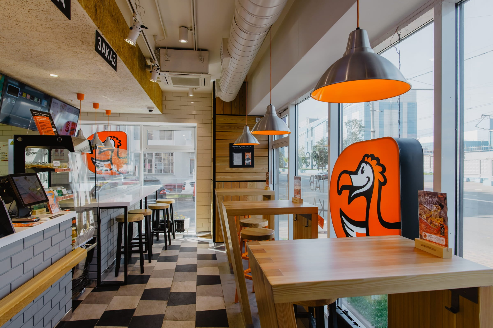
Отделка стен
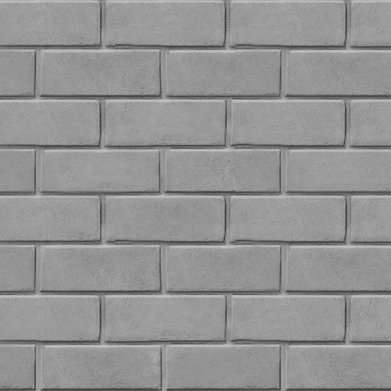
Облицовка клинкером под новый кирпич, серого цвета
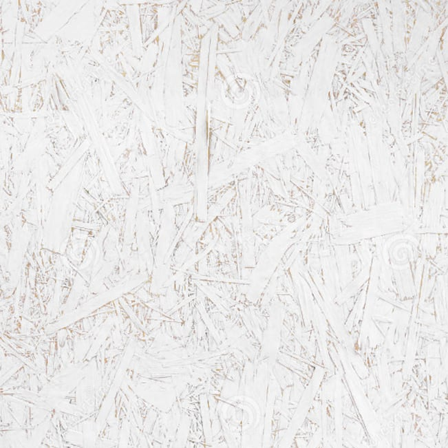
Облицовка панелями ОСП с неполной покраской
Облицовка плоской прямоугольной белой матовой плиткой
Покраска в оранжевый RAL 2003
Покраска в серый RAL 7000
Декоративное панно из доски лиственницы с раскладкой из металлических уголков в цвете RAL 7021
Напольные покрытия
Фоновый керамогранит с текстурой под камень или бетон, серого цвета
Панно из керамогранита белого, серого и темно-серого цветов со специально разработанным узором
Для акцентирования кассовой зоны и санузлов
Потолок
В этой концепции потолки могут быть открытыми или подшивными из ГКЛ (гипсокартонного листа).
Для открытых потолков воздуховоды вентиляции выполняют в жестких коробах, электрику разводят по жестким каналам круглого сечения. Все видимые инженерные коммуникации прокладывают параллельно и перпендикулярно стенам и окрашивают в цвет потолка.
Открытый
ОСП с неполной прокраской белым цветом по нижней поверхности. Для акцентирования кассовой зоны и зоны посадки.
ОСП с прозрачным матовым лаком с покраской боковых поверхностей
ГКЛ (гипсокартонный лист), с покраской в белый цвет
Декор
Основной фокусной точкой является декоративное панно из досок с граффити с изображением птицы «Додо»(1)
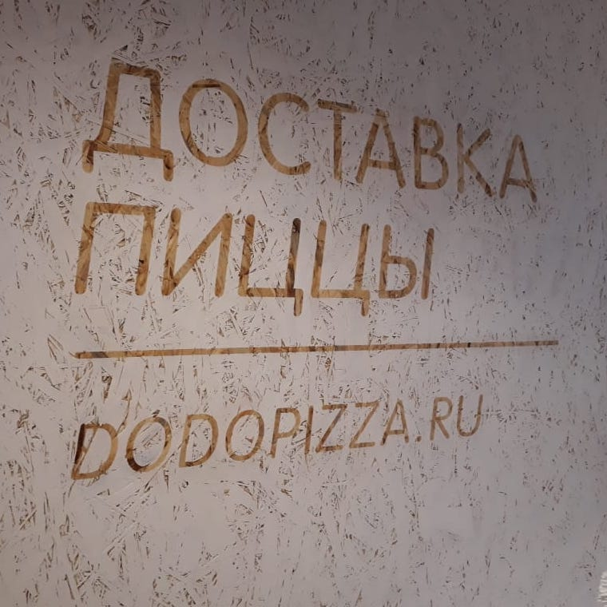
Для декора стен с облицовкой ОСП используется прием «обратный трафарет» (изображения и тексты формируются текстурой ОСП, фон — покраска)(2)
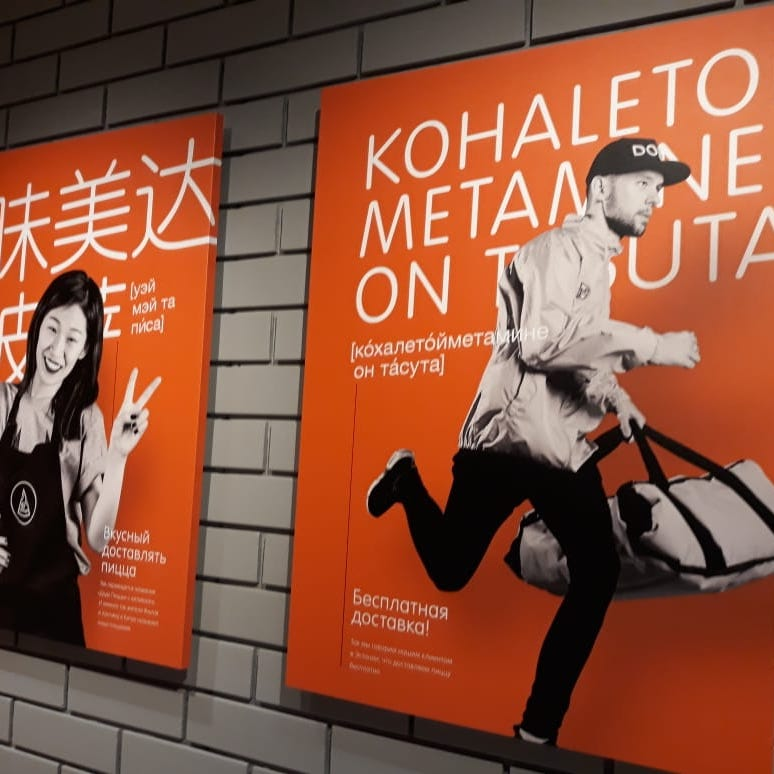
В интерьере используются постеры, разработанные для этой концепции
Освещение
Фоновой подсветки проходов
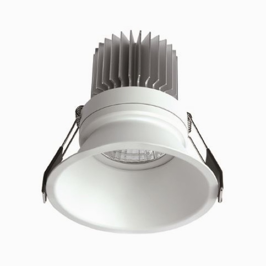
Акцентной (2,3) — основных зон (касса, стойки самообслуживания)
Подвесные светильники «Икеа Фото» диаметром 38 мм
Зонирование и меблировка
Учитывая преимущественное расположение на высоком трафике, концепция предусматривает высокую оборачиваемость и меньшее время пребывания в пиццерии.
Столы
Доля барной посадки с высотой стола 110 см в пиццериях этого формата выше. Барная посадка предусмотрена в проходных зонах и у кассы, она позволяет гостям чувствовать себя комфортнее, удобнее в использовании для коротких визитов.
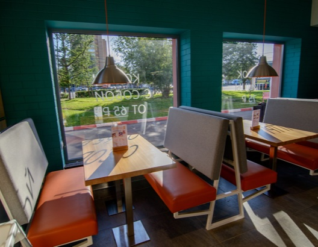
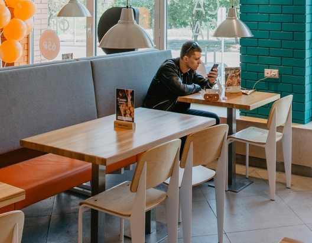
В дальних и изолированных частях залов используется посадка со столами стандартной высоты (75 см) в виде диванных и комбинированных групп, а также двух- и реже четырехместных столов.
Индивидуально разработанные элементы мебели
Барные стойки-«кусочек»
Столы со столешницами из массива лиственницы
Модульные диваны на металлическом каркасе
Стулья
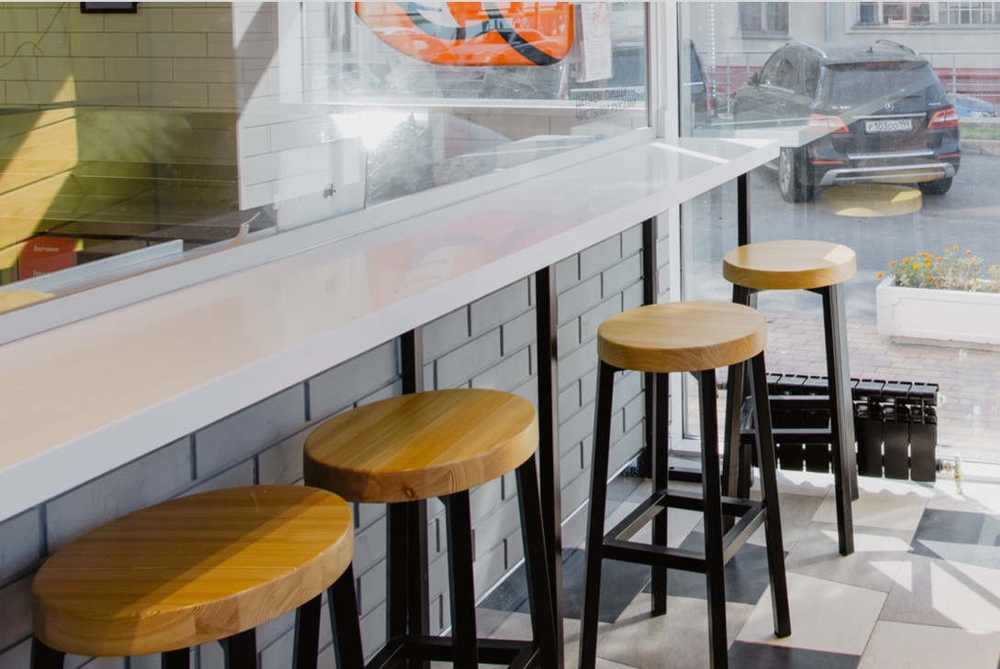
Барные стулья также разработаны индивидуально, и изготавливаются из массива лиственницы на металлокаркасе фирменных цветов (оранжевый и темно-серый).
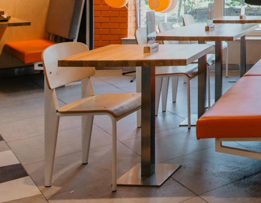
Для обычной посадки используются стулья на металлическом или деревянном каркасе белого цвета с сиденьем и спинкой из фанеры покрытой бесцветным лаком.
Детали
Стык стен с полом оформляется профильным плинтусом из шлифованной нержавеющей стали высотой 10 см.
Family
Концепция разработана для формата «Семейной» пиццерии, предназначена для создания цельных, ярких и просторных пространств для отдыха и совместного времяпрепровождения семьями или группами посетителей.
Концепция NLF идентична в решениях декора и отделки концепции NLC, но, учитывая семейную направленность, использует большее количество цветов для поверхностей стен и деталей мебели.
Отделка стен
Облицовка клинкером под новый кирпич, серого цвета
Облицовка панелями ОСП с неполной покраской
Облицовка плоской прямоугольной белой матовой плиткой
Бирюзовый клинкер
Оранжевый клинкер
Желтый клинкер
Покраска в серый RAL 7000
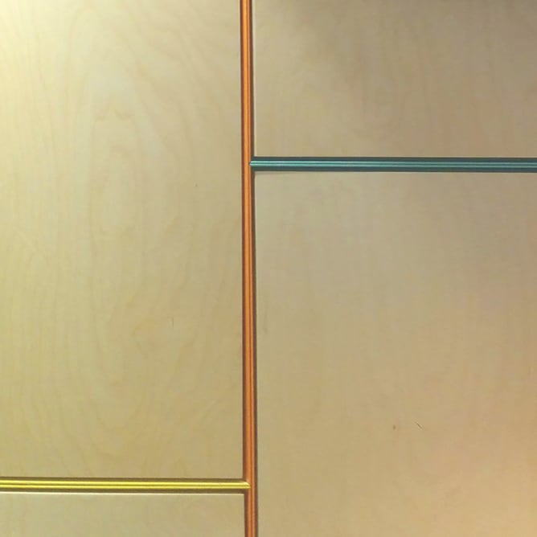
Декоративное панно из доски фанеры с раскладкой из металлических уголков оранжевого, желтого и бирюзового цветов
Напольные покрытия
Фоновый керамогранит с текстурой под камень или бетон, серого цвета
Панно из керамогранита белого, серого и темно-серого цветов со специально разработанным узором
Для акцентирования кассовой зоны и санузлов
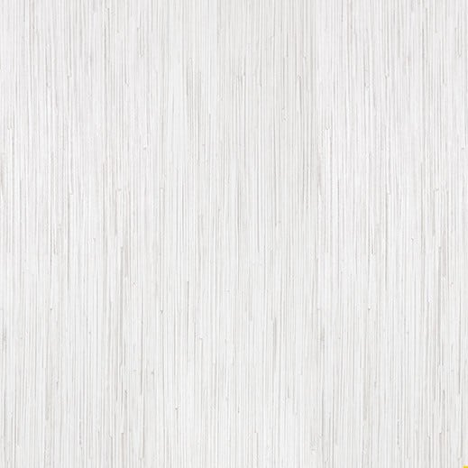
В детских комнатах - ламинат белого цвета с вкраплениями серого
Потолок
В этой концепции потолки могут быть открытыми или подшивными из ГКЛ (гипсокартонного листа).
Для открытых потолков воздуховоды вентиляции выполняют в жестких коробах, электрику разводят по жестким каналам круглого сечения. Все видимые инженерные коммуникации прокладывают параллельно и перпендикулярно стенам и окрашивают в цвет потолка.
Открытый
ОСП с неполной прокраской белым цветом по нижней поверхности. Для акцентирования кассовой зоны и зоны посадки.
ОСП с прозрачным матовым лаком с покраской боковых поверхностей
ГКЛ (гипсокартонный лист), с покраской в белый цвет
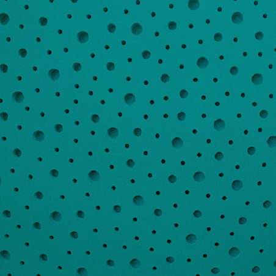
Акустический потолок из перфорированных гипсокартонных листов САУНДЛАЙН-Акустика Звездное небо. Для детской комнаты и игровой


{kind=link}
{kind=link}
{kind=link}
{kind=link}
{kind=link}
{kind=link}
{kind=link}
{kind=link}